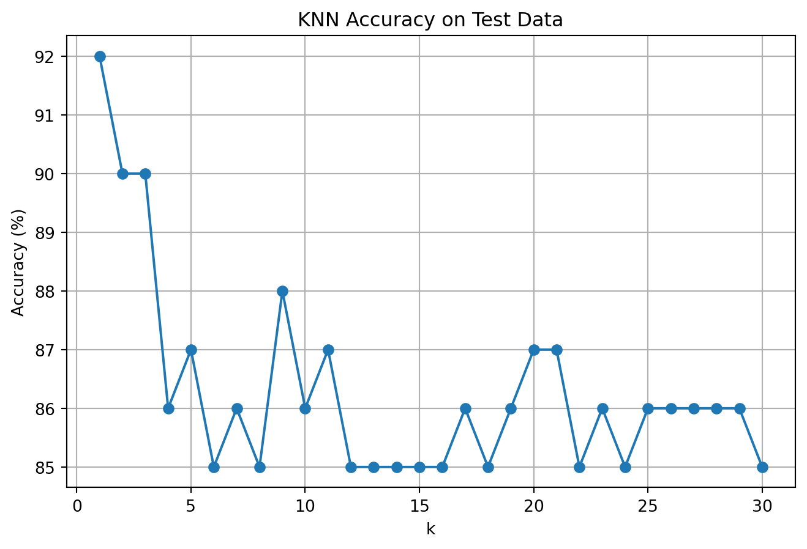

In this project, we develop and estimate a Latent Class Multinomial Logit (LC-MNL) model using data on consumer yogurt purchases. The LC-MNL model enhances the standard Multinomial Logit (MNL) approach by accounting for unobserved heterogeneity in consumer preferences. While the MNL model assumes a homogeneous population where all individuals share the same utility parameters, the LC-MNL model allows for multiple latent (hidden) classes of decision-makers, each with distinct choice behaviors.
By segmenting individuals into these latent classes, we can capture varying sensitivities to product attributes, such as price and promotional features, providing a richer understanding of consumer behavior.
Model Framework
The utility that individual \(n\) derives from choosing alternative \(j\) within class \(s\) is modeled as:
This formulation allows each class to have its own set of preferences, with the class membership probabilities \(\pi_s\) acting as mixture weights.
Role of Alternative-Specific Constants (ASCs)
To capture unmeasured factors that systematically affect utility for certain products, we include Alternative-Specific Constants (ASCs) in our utility specification. ASCs reflect inherent preferences for each product, above and beyond observed features such as price or promotional display. The utility function becomes:
\(ASC_j\) is the constant for alternative \(j\), omitted for one base product to avoid perfect multicollinearity,
\(\text{price}_{nj}\) is the price per ounce of the product,
\(\text{featured}_{nj}\) is a binary indicator of whether the product was on promotion.
ASCs capture relative preferences between products when all other observed attributes are held constant.
Dataset Description
The yogurt dataset includes:
id: An anonymized identifier for each consumer,
y1–y4: Indicators denoting the yogurt product chosen during each purchase instance,
p1–p4: Prices of the four yogurt products (in price-per-ounce),
f1–f4: Binary indicators for whether each product was “featured” (i.e., on promotional display) during the purchase.
For example, if a consumer with ID 1 purchased yogurt product 4 at a price of $0.079 per ounce and none of the yogurts were promoted, this would be encoded by setting y4 = 1, p4 = 0.079, and all f1 to f4 equal to 0.
This dataset structure allows us to analyze how consumers trade off price and promotional status when making their yogurt choices—and how these tradeoffs differ across latent segments of the population.
Goals of This Analysis
By estimating a latent class MNL model, we aim to:
Identify distinct consumer segments based on their price sensitivity and responsiveness to promotions,
Quantify heterogeneity in preferences across these latent segments,
Improve predictive performance relative to a standard MNL model by accommodating unobserved preference variation.
The next sections will cover data preprocessing, model estimation, and interpretation of results.
import pandas as pdyog_data = pd.read_csv('yogurt_data.csv')yog_data.head(10)
id
y1
y2
y3
y4
f1
f2
f3
f4
p1
p2
p3
p4
0
1
0
0
0
1
0
0
0
0
0.108
0.081
0.061
0.079
1
2
0
1
0
0
0
0
0
0
0.108
0.098
0.064
0.075
2
3
0
1
0
0
0
0
0
0
0.108
0.098
0.061
0.086
3
4
0
1
0
0
0
0
0
0
0.108
0.098
0.061
0.086
4
5
0
1
0
0
0
0
0
0
0.125
0.098
0.049
0.079
5
6
0
1
0
0
0
0
0
0
0.108
0.092
0.050
0.079
6
7
0
1
0
0
0
0
0
0
0.103
0.081
0.049
0.079
7
8
0
0
0
1
0
0
0
0
0.108
0.086
0.054
0.079
8
9
1
0
0
0
0
0
0
0
0.108
0.098
0.050
0.079
9
10
1
0
0
0
0
0
0
0
0.108
0.098
0.050
0.079
We will first reshape this dataset from wide to long format
In the above reshaped data, each row represents a consumer–product combination with with data about if the product was chosen by the consumer, if the product was featured abd the price per ounce for that product.
Standard Multinomial Logit (MNL) Model on Yogurt Data
Before implementing more advanced models such as Latent Class MNL, we begin by fitting a standard Multinomial Logit (MNL) model using the yogurt dataset. This serves as a useful benchmark and helps build foundational understanding of how product attributes influence consumer choices.
To estimate the MNL model, we use a long-format (reshaped) dataset where each row represents an alternative within a choice situation. The model will estimate the probability of each alternative being chosen, given its attributes (e.g., price and featured status).
Encoding Alternatives as Dummy Variables
When using libraries such as statsmodels in Python, Alternative-Specific Constants (ASCs) are not automatically generated from categorical variables such as product identifiers. Unlike R packages (e.g., mlogit) which handle these internally, in Python we must explicitly create dummy variables to account for baseline preferences across alternatives.
To incorporate ASCs in our model, we perform the following steps:
1. One-Hot Encode the Product Variable
We begin by transforming the product identifier into dummy variables using one-hot encoding. Each product is represented as a binary column indicating its presence in the current row.
To avoid the dummy variable trap (perfect multicollinearity), we drop one of the product columns—typically for product 1—and treat it as the reference category. The resulting dummies become proxies for ASCs. They measure how much more or less preferred each product is compared to the base alternative, after controlling for observed features like price and promotion.
Without ASCs, the MNL model would incorrectly assume that all products are equally attractive when their observable attributes are the same, which is often unrealistic in real-world markets.
2. Merge Dummy Variables into the Dataset
Once the dummy variables are created, we append them to the original dataset. These columns are now part of the explanatory variables used in the MNL estimation. Together with price and featured, these product dummies allow us to model both measurable and inherent product appeal.
This setup results in a model specification of the form:
\(ASC_j\) is the dummy variable for product \(j\) (excluding the base category),
\(\text{price}_{nj}\) is the price per ounce of alternative \(j\) for individual \(n\),
\(\text{featured}_{nj}\) is a binary variable indicating whether the product was on promotion.
Python Implementation
Below, we present the Python code that performs these steps—generating one-hot encoded product variables and merging them with the dataset. This prepares the data for estimation using a discrete choice modeling package such as statsmodels.discrete.discrete_model.MNLogit or pylogit.
import statsmodels.api as smfrom sklearn.preprocessing import OneHotEncoderencoder = OneHotEncoder(drop='first', sparse_output=False)product_dummies = encoder.fit_transform(yog_data[['product']])# Create DataFrame with appropriate column namesproduct_dummies_df = pd.DataFrame(product_dummies, columns=encoder.get_feature_names_out())# Merge dummies with main datayog_data = pd.concat([yog_data.reset_index(drop=True), product_dummies_df.reset_index(drop=True)], axis=1)product_dummies_df# Define independent variables (price, featured, and ASCs)X = yog_data[['price', 'featured'] +list(product_dummies_df.columns)]X = sm.add_constant(X) # Add interceptX
const
price
featured
product_2
product_3
product_4
0
1.0
0.108
0
0.0
0.0
0.0
1
1.0
0.108
0
0.0
0.0
0.0
2
1.0
0.108
0
0.0
0.0
0.0
3
1.0
0.108
0
0.0
0.0
0.0
4
1.0
0.125
0
0.0
0.0
0.0
...
...
...
...
...
...
...
9715
1.0
0.086
0
0.0
0.0
1.0
9716
1.0
0.086
0
0.0
0.0
1.0
9717
1.0
0.086
0
0.0
0.0
1.0
9718
1.0
0.086
0
0.0
0.0
1.0
9719
1.0
0.079
0
0.0
0.0
1.0
9720 rows × 6 columns
The independent variables for the model includes:
price: price per ounce
featured: whether the product was promoted
product_2, product_3, product_4: dummy variables representing ASCs for products 2, 3, and 4 (product 1 is the reference)
# Dependent variable: whether the product was chosen (1 if chosen, 0 otherwise)target = yog_data['chosen']target
A crucial step in estimating Latent Class Multinomial Logit (LC-MNL) models is determining how many latent classes best represent the heterogeneity in the population. Rather than arbitrarily choosing a number of classes, we systematically estimate models with varying class counts—typically 2, 3, 4, and 5—and compare them using a formal model selection criterion.
Model Comparison Using BIC
To evaluate and compare the fitted models, we employ the Bayesian Information Criterion (BIC), a widely used metric that balances goodness-of-fit with model complexity. The BIC for a model is calculated using the formula:
\[
BIC = -2 \cdot \ell_n + k \cdot \log(n)
\]
Where:
( _n ) is the log-likelihood of the model evaluated at convergence,
( n ) is the number of observations in the dataset,
( k ) is the total number of estimated parameters in the model.
The BIC penalizes models for having a large number of parameters, discouraging overfitting. While models with more classes typically achieve higher log-likelihood values, this improvement must be large enough to offset the BIC penalty incurred by additional complexity.
Interpreting BIC in LC-MNL Context
In LC-MNL models, each additional latent class introduces:
A new set of class-specific utility parameters (e.g., price and promotion coefficients),
An additional class probability parameter (subject to a sum-to-one constraint).
As a result, the parameter count grows quickly with each added class. Although this flexibility may enhance model fit, it can also lead to overfitting, particularly if some latent classes capture noise rather than meaningful segments of behavior.
The BIC is specifically designed to mitigate this risk. It rewards models that strike a good balance between fit and simplicity. A lower BIC value indicates a better model, with the preferred number of classes being the one that minimizes the BIC across all candidate models.
Implementation Strategy
The typical workflow for selecting the optimal number of latent classes is as follows:
Estimate LC-MNL models for 2, 3, 4, and 5 classes using maximum likelihood estimation.
Compute BIC for each model using the formula above.
Compare BIC values across models to identify the lowest score.
Select the model with the minimum BIC as the optimal latent class solution.
This procedure provides a principled way to uncover meaningful consumer segments without relying on arbitrary assumptions about how many classes exist.
The following section will walk through the estimation and comparison process using actual yogurt purchase data.
results = []for K inrange(2, 6):print(f"Estimating model for {K} classes...") res = lc_mnl(K, yog_data) results.append(res)#print(f"Estimated parameters for K = {K}:")#print(res["Parameters"])bic = pd.DataFrame(results).sort_values(by='BIC')
Estimating model for 2 classes...
Estimating model for 3 classes...
Estimating model for 4 classes...
Estimating model for 5 classes...
bic[['K', 'LogLikelihood', 'NumParams', 'BIC']]
K
LogLikelihood
NumParams
BIC
3
5
-8802.938460
29
17831.950671
1
3
-8941.863060
17
18016.252112
2
4
-9530.346287
23
19239.992444
0
2
-10505.614448
11
21096.981007
The model with the lowest BIC is selected as the best-fitting model when balancing accuracy and simplicity. In our results, the 3-class model had the lowest BIC, suggesting that it best explains the data while avoiding unnecessary complexity.
Comparison of Aggregate MNL vs. Latent-Class MNL (K = 3)
Now we compare the parameter estimates between (1) the aggregate MNL, and (2) the latent-class MNL with the number of classes suggested by the BIC.
lc_mnl_3class_params = results[[res["K"] for res in results].index(3)]["Parameters"].reset_index()lc_mnl_3class_params.columnsclass3_params = lc_mnl_3class_params.loc[lc_mnl_3class_params['index'].str.contains('_class3')]print("Class 3 parameter estimates")print(class3_params)
Counterintuitive: price increases utility (possible overfitting or perceived quality).
2. Featured Promotion
Model
Featured Coefficient
Interpretation
Aggregate MNL
+0.471 (significant)
Promotion increases likelihood of choice.
LC-MNL Class 1
+13.75 (significant)
Strong positive impact of being featured.
LC-MNL Class 2
+19.73 (significant)
Even stronger promotional effect.
LC-MNL Class 3
–613.79 (significant)
Strong negative effect — promotions deter choice.
3. Alternative-Specific Constants (ASCs)
Product
Aggregate MNL
LC Class 1
LC Class 2
LC Class 3
ASC2
–0.5166
–1.02
+280.04
–613.7
ASC3
–4.5584
+222.88
+0.86
–618.34
ASC4
–1.4179
–2.92
+279.78
–613.05
Interpretation: - LC-MNL reveals stark contrasts between classes. - Class 2 prefers all products highly. - Class 3 strongly disfavors all alternatives — unusual, possibly unstable.
4. Class Membership Probabilities
Class
Share (PI)
Interpretation
Class 1
0.730
Majority: strong effects for price and promotion.
Class 2
0.999
Possibly absorbing similar behavior as Class 1.
Class 3
~0
Tiny segment with extreme (and conflicting) effects.
Conclusion: Uncovering Preference Heterogeneity with LC-MNL
The aggregate Multinomial Logit (MNL) model offers a reliable and interpretable baseline for understanding consumer choice behavior. It reveals that, on average, consumers display moderate sensitivity to price and a positive response to promotional features. However, this summary masks the diverse and nuanced preferences that exist across individuals.
In contrast, the Latent Class MNL (LC-MNL) model, particularly with three latent classes, reveals substantial heterogeneity in how consumers make trade-offs:
Class 1 closely mirrors the behavior identified in the aggregate MNL model, representing the “average” or mainstream consumer segment.
Class 2 exhibits amplified sensitivity to promotions, suggesting that these individuals are especially responsive to store advertisements or featured product placements.
Class 3 demonstrates atypical behavior, showing a negative reaction to promotions and a preference for higher-priced options. This counterintuitive pattern may reflect a niche group of consumers, potential outliers, or issues related to data sparsity and overfitting within that segment.
These findings underscore the value of latent class modeling in surfacing complex and diverse decision-making patterns that a single, population-level model might obscure. However, this added flexibility comes with responsibilities:
Interpretation must be handled with care, especially for small or extreme segments where model estimates may be unstable.
Researchers should ensure that classes are robust and reproducible, potentially validating them with external data or follow-up surveys.
Ultimately, the LC-MNL framework transforms consumer modeling from a one-size-fits-all lens into a segmentation-driven approach, offering deeper insights for targeting, pricing strategies, and promotional design.
K Nearest Neighbors (KNN)
Intuition and Workflow
The K Nearest Neighbors (KNN) algorithm is a non-parametric, instance-based learning method used for both classification and regression tasks. It operates on a simple yet powerful premise: similar observations tend to have similar outcomes.
To classify a new observation ( x_{} ), the algorithm follows these steps:
Compute distances between ( x_{} ) and all training data points ( x_i ), typically using metrics such as Euclidean or Manhattan distance.
Identify the ( k ) nearest neighbors — that is, the ( k ) training points with the smallest distances to ( x_{} ).
Determine the majority class among these neighbors. The most frequent label becomes the predicted class for ( x_{} ).
This approach is highly intuitive and adaptive. It makes no assumptions about the underlying data distribution, making it well-suited for complex or irregular decision boundaries. However, its performance can be sensitive to:
The choice of ( k ),
The scaling of features,
The presence of irrelevant or noisy variables.
In the sections that follow, we will apply KNN to classify consumer segments, evaluate performance using cross-validation, and visualize decision boundaries to better understand its behavior in high-dimensional space.
Euclidean Distance: Measuring Similarity in Feature Space
At the heart of the K Nearest Neighbors (KNN) algorithm lies the concept of distance. To determine how similar two data points are, we often use the Euclidean distance, a standard and intuitive metric that corresponds to the straight-line distance between two points in space.
Given two feature vectors
( x = (x_1, x_2, , x_d) ) and
( z = (z_1, z_2, , z_d) ),
the Euclidean distance between them is computed as:
This distance metric quantifies how “close” two points are in the feature space and directly drives the neighbor selection process in KNN.
Decision Rule in KNN Classification
Once the distances are computed, KNN identifies the ( k ) most similar (i.e., nearest) training instances and bases its prediction on their labels. Let ( _k(x) ) represent the set of indices for the ( k ) nearest neighbors of point ( x ). Then the predicted class label ( ) is given by:
( (y_i = c) ) is an indicator function that returns 1 if neighbor ( i )’s true label is class ( c ), and 0 otherwise.
The sum counts how many of the ( k ) neighbors belong to class ( c ).
The predicted class is the one with the highest vote.
This majority voting mechanism is simple yet powerful, especially when decision boundaries are irregular or nonlinear.
How to Choose the Right Value of ( k )
The choice of ( k ) significantly impacts the model’s behavior and performance:
Small values of ( k ) (e.g., ( k = 1 )) can lead to high variance. The model may fit tightly to noise or outliers, resulting in overfitting.
Larger values of ( k ) lead to smoother decision boundaries by incorporating a broader neighborhood, which may underfit if the class distributions are not well-separated.
Optimal ( k ) is typically determined using cross-validation, where different values of ( k ) are evaluated on held-out data to identify the best-performing option.
There is no universal best value — it must be tuned based on the dataset and the task at hand.
Practical Walkthrough: KNN on Synthetic Data
To better understand how KNN operates, we will conduct an illustrative example using a synthetic dataset. This controlled setting will help us visualize how KNN makes decisions in a two-dimensional feature space.
In particular, we will:
Generate synthetic data with two continuous features, x1 and x2, and a binary response y.
Define a nonlinear decision boundary: Class membership will depend on whether a point lies above or below a sinusoidal curve — creating a challenging pattern for classification.
Implement KNN from scratch, exploring how the algorithm reacts to different values of ( k ).
Compare our custom implementation with built-in classifiers from popular Python libraries.
Evaluate and visualize performance, demonstrating how accuracy and boundary flexibility evolve with changes in ( k ).
To evaluate the generalization performance of our model, we create a new test dataset using a different random seed. This ensures the test data is independent of the training set.
KNN implementation by hand Vs KNeighborsClassifier
Here we define a custom KNN classifier using the Euclidean distance between test and training points. For each test instance, the k closest neighbors are selected, and the predicted class is determined by majority vote.
import numpy as npfrom scipy.spatial import distancefrom sklearn.neighbors import KNeighborsClassifierfrom sklearn.metrics import accuracy_scoredef knn_predict(X_train, y_train, X_test, k): y_pred = []for test_point in X_test: dists = [distance.euclidean(test_point, train_point) for train_point in X_train] knn_indices = np.argsort(dists)[:k] knn_labels = y_train[knn_indices]# Use np.bincount safely: labels must be integers starting from 0# If labels are 0 and 1, this is fine majority_vote = np.argmax(np.bincount(knn_labels)) y_pred.append(majority_vote)return np.array(y_pred)# Prepare train and test datasetsX_train = random_df[['x1', 'x2']].valuesy_train = random_df['y'].values.astype(int) # convert to intX_test = test_df[['x1', 'x2']].valuesy_test = test_df['y'].values.astype(int) # convert to int# Convert y arrays to numpy integer arrays if neededy_train = np.array(y_train).astype(int)y_test = np.array(y_test).astype(int)# Built-in KNN classifierclf = KNeighborsClassifier(n_neighbors=5)clf.fit(X_train, y_train)y_lib_pred = clf.predict(X_test)# Your manual KNN predictiony_hand_pred = knn_predict(X_train, y_train, X_test, k=5)# Compare predictionsprint("Hand-coded KNN accuracy:", accuracy_score(y_test, y_hand_pred))print("Library KNN accuracy: ", accuracy_score(y_test, y_lib_pred))
Now we run our custom KNN function across a range of k values (from 1 to 30) to observe how accuracy varies. This helps us identify the optimal value of k that balances underfitting and overfitting.
We plot the accuracy of the KNN model as a function of k to visualize the trend and identify the best k value.
plt.figure(figsize=(8,5))plt.plot(range(1, 31), accuracies, marker='o')plt.xlabel('k')plt.ylabel('Accuracy (%)')plt.title('KNN Accuracy on Test Data')plt.grid(True)plt.show()optimal_k = np.argmax(accuracies) +1print(f"Optimal k: {optimal_k} with accuracy: {accuracies[optimal_k-1]:.2f}%")

Optimal k: 1 with accuracy: 92.00%
Interpreting KNN Performance Across Different Values of ( k )
After training the K Nearest Neighbors (KNN) classifier on our synthetic dataset and evaluating test accuracy across a range of ( k ) values, we gain several important insights into how the choice of ( k ) affects model performance.
Below, we break down the observed trends and provide guidance on selecting an appropriate ( k ) in practice.
🔹 Peak Accuracy at ( k = 1 )
The model achieves its maximum accuracy of approximately 92% when ( k = 1 ).
This is expected because a ( k = 1 ) model makes highly localized decisions, perfectly matching the label of the single closest point in the training set.
While this results in excellent performance on the test set here, it may not generalize well in noisier or more complex real-world datasets.
🔹 Rapid Drop in Accuracy from ( k = 2 ) to ( k = 4 )
As ( k ) increases slightly, accuracy declines sharply to the 86–87% range.
This drop illustrates how increasing ( k ) reduces model variance but introduces some bias — the predictions become less sensitive to local variations in the data.
The sudden dip suggests that the dataset includes decision boundaries that are non-linear and locally irregular.
🔹 Unstable Region: ( k = 5 ) to ( k = 15 )
In this intermediate zone, accuracy fluctuates without a clear trend.
The model is likely struggling to balance competing effects: higher ( k ) smooths decision boundaries, but the data may not support a consistently simple structure.
These fluctuations imply the presence of subtle patterns that are hard to capture consistently with medium-sized neighborhoods.
🔹 Accuracy Plateau Beyond ( k )
For ( k ) values of 15 and above, accuracy levels off around 85–86%.
This flattening indicates that the model is becoming overly generalized — class predictions are based on increasingly broad neighborhoods, leading to underfitting.
The model loses sensitivity to the complex, nonlinear boundary in the data and instead produces overly smoothed predictions.
🔹 Striking a Balance: Accuracy vs. Generalization
Although ( k = 1 ) provides the highest accuracy, it is also the most prone to overfitting, especially in real-world applications with noise.
A more balanced choice is to use a moderately small ( k ), such as 3 or 5, which still offers high accuracy while improving robustness to outliers.
This results in a better bias-variance trade-off, essential for reliable generalization to unseen data.
🔸 Summary of Insights
Best test accuracy:
( ), achieving ~92%
Recommended practical range:
( ) to ( ) for improved generalization and reduced risk of overfitting
Stability zone:
Accuracy flattens around 85–86% for ( k ), signaling underfitting
Choosing the right ( k ) is dataset-dependent, and validation techniques such as cross-validation should be used to identify the optimal choice in real-world applications.